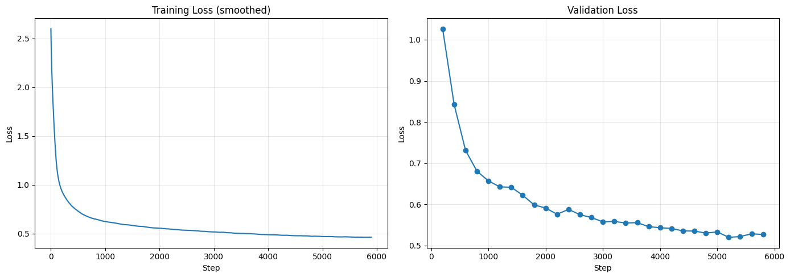
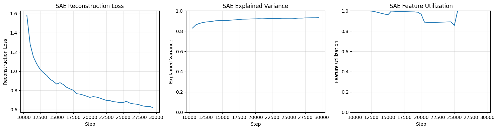
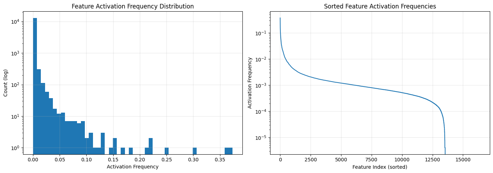

Research Project
Can a model trained to predict letters learn to represent words?
A sparse autoencoder experiment testing whether a byte-level language model learns word-level features from character prediction.
I recently did a fun weekend experiment to test out the use of sparse autoencoders for feature detection. Specifically, I train a model to predict individual characters from the TinyStories dataset, and then use feature detection to test if the model has learned to represent individual words from this simple objective. The purpose of this experiment is to build an intuition on the development of features, and more importantly for me, to start experimenting in the space of emergent language abilities. That is to say, it is a first and smallest step in the direction of having models learn language as a higher order abstraction of environmental features.
I am interested in this because I am interested in how we as humans can learn distinct concepts that we can put words to from raw environmental data - to the extent that language emerges naturally from this process. I think this is an interesting metric to pose for models. If a model can produce language as an emergent property of modeling environmental data, operating as an agent in that environment, and performing social functions with other agents, then it surely has achieved impressive levels of intelligence.
The scope of this experiment does not reach this yet. This is a first and smallest step in my exploration of this idea.
Experimental Design
Transformer Model
I trained a simple GPT-2 style model to predict character level byte tokens from the TinyStories dataset. I trained the model for 6000 steps, with a batch size of 32, and context length of 512, totalling around 100,000,000 tokens. The model was trained on a single Tesla T4 GPU.
| Hyperparameter | Value |
|---|---|
| Vocab Size | 256 |
| Context Length | 512 |
| Embedding Dimension | 512 |
| Attention Heads | 8 |
| Layers | 8 |
| FFN Hidden Dimension | 2048 |
| Dropout | 0.1 |
| Normalization | RMSNorm |
| Positional Embedding | RoPE |
| Optimizer | AdamW |
| Batch Size | 32 |
| Training Steps | 6000 |
| Gradient Accumulation Steps | 4 |
| Learning Rate | 1e-3 |
| Weight Decay | 0.1 |
| Warmup Steps | 300 |
| Learning Rate Scheduler | Cosine |
The model reached a final validation loss of 0.5750 after training, which I figured would be sufficient for the task at hand. The text generation is thematically relevant to the prompt but also somewhat incoherent. Notably, the byte level generation produces real words, spelled correctly and relevant to the context.
Prompt: In a world where artificial intelligence
Output: In a world where artificial intelligence and a whale wanted to be saved!
The fish and the whale worked together to build a river. Soon the whale was sailing around the river with soap!

Sparse Autoencoder
I then trained the SAE. I used top-k activation selection to enforce sparsity. I used a 32x expansion factor, for a hidden dimension of 16384, and a k value of 32.
| Hyperparameter | Value |
|---|---|
| Expansion Factor | 32 |
| Hidden Dimension | 16384 |
| k | 32 |
| Learning Rate | 1e-4 |
| Batch Size | 4096 |
| Training Steps | 30,000 |
| Warmup Steps | 100 |
| Resample Dead Neurons | True |
| Dead Neuron Threshold | 10000 |
One mistake I made was only collecting 250,000 activations for feature detection, which is probably 100x too few given the number of training steps. I do not think this really affects my results for the purposes of this experiment, but it is something I will be more careful about next time. The SAE model reached a final reconstruction loss of 0.6197, and an auxiliary top-k loss of 0.4488.

Total features: 16384
Dead features, never activated: 2844
Rare features, less than 0.1%: 10311
Mean activation frequency: 0.0020
Median activation frequency: 0.0007
I then looked to find which features activate very strongly to particular words, and which features activate exclusively to particular words. I looked at the most common words in my dataset, and found the features that activate for tokens towards the end of the word. This roughly corresponds to the presence of features that can detect the end of a word. A second experiment looks at the middle of the word and examines the features produced there.

Results and Discussion
Overall I found 262 words that have unique highly selective features active strongly for them. My analysis so far is not super deep, but superficially these results seem strong with respect to my hypothesis. I am impressed by how many words have dedicated highly selective features.
We already knew this, but this helps confirm the idea that abstract prediction targets can emerge organically from training on low level prediction tasks. This is directly analogous to the traditional mechanistic interpretability tests of finding high order concepts from a model trained to predict word level tokens.
Next Step
Simply finding features that correspond uniquely to particular words at the end of the word is not enough to show that the model is really using word level abstractions. These features could simply be features corresponding to sequences of characters that tell the model to implement a space and thus end a word. I am looking to show the model developing a word level abstraction of the data, and to do that I must show that the model uses word level features to make word level predictions.
Feature Injection and Steering
To more robustly test the hypothesis that these features are useful word level abstractions, I tried a simple feature injection experiment. I took several highly selective features, and amplified their activation in the forward pass of the GPT model to see if this would bias the outputs to the correlated words.
Overall the results are noisy due to the small scale of this experiment, and somewhat qualitative. However, an interesting result came from amplifying feature 7149, highly selective for the word "little". At no amplification, the text generation does not make use of the word "little"; however, at higher levels of amplification, we see "little" start appearing from the same initial prompts.
Check out the notebook for more details and the implementation.